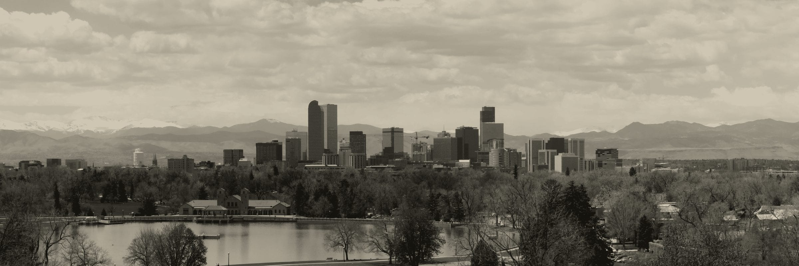

Live music for company offsites
Corporate retreat evenings in the Colorado mountains.
By the last night of a retreat, the meetings are over and everyone’s ready to let loose a little. We can bring the right band for that party, plus different music for the welcome dinner and the program night earlier in the stay, all on one contract.
Planning something closer to Denver? Learn more about a corporate offsite in Boulder, or take a look at our corporate events.
Trusted and booked by
The look
Live music in Denver and the Colorado mountains.
Our musicians play all over Colorado, from Denver venues to outdoor stages at ranches and resorts.


Live music for each night of your retreat
- The welcome dinner
- Everyone’s been traveling all day, and this is the night for conversation. A duo is a great choice here, because colleagues who’ve just flown in can hear each other and actually get acquainted.
- The program night
- This is the night for awards, remarks and maybe a look back at the year. We’ll plan the music around your program, so nobody has to speak over the band.
- The last night
- This is the night to turn the music up. A quartet can get people dancing and still stay inside the resort’s sound limit and curfew. If you’d like a Featured Artist out front, consider Tejas Singh.
Want some ideas? We’ve written up some corporate retreat evening ideas in Vail, and if you’re planning a dinner in town, take a look at our client dinners page.
We can also help with the quieter parts of a retreat. Firstwater is a seventy-five-minute sound bath with your whole group resting on the floor, and it’s a lovely way to open a morning or close an evening. René Moffatt plays his own folk and Americana songs, and he’s a perfect fit after dinner.
Meeting in person
Offsites for remote and hybrid companies.
Most of the people organizing company offsites now work remote or hybrid themselves (91 percent, in a 2026 industry report), and 57 percent of fully remote companies call the offsite essential to the business. Most of these companies get together once or twice a year for a few weekdays, and a lot of them choose Colorado, because a remote team can fly straight into Denver and be in the mountains in about two hours.
The first night of a remote team’s offsite can feel a little different from other corporate events. Many of your colleagues may only know each other from video calls, so a relaxed dinner with live music is an easy way to break the ice.
We’ve also put together a list of company offsite ideas in Colorado for remote teams. Our Americana band gives a group from out of state a real taste of Colorado, and live band karaoke is a fun choice if your team likes to sing. We also wrote about what music Colorado is known for.
Resort dates
Bringing live music to a mountain resort.
A date at a resort can take a little more planning than one in Denver, and it mostly comes down to travel.
Vail and Beaver Creek are a straight drive up I-70 from Denver, while Aspen can take most of a working day each way. Just let us know where the retreat is and we’ll work out the travel with you.
A band that finishes late in Aspen may need to stay the night, so we’ll plan for lodging there. The towns along I-70 are close enough that lodging usually isn’t needed.
The resort towns
Corporate retreats in Vail, Aspen, Beaver Creek and Breckenridge.
Every mountain town works a little differently, so take a look at the one you’re considering.
- Vail
- Vail is a popular place for incentive events, and venues there have their own way of handling setup.
- Aspen
- Many corporate dinners in Aspen happen in smaller, more intimate spaces, so a duo or a trio is often plenty.
- Beaver Creek
- Many of the venues here are up the mountain above the village hotels, and the village is gated, so we’ll plan load-in around its access times.
- Breckenridge
- Breckenridge is the highest of the four towns, and many events here happen in the historic district rather than in hotels.
Retreat photos and video
For many remote and hybrid companies, a retreat is the one time in the year everyone is in the same place. We can add a photographer and a videographer for the stay, and the photos and clips are great for showing new hires and clients what your culture is like. For that, take a look at the Culture Film.
What clients say
“To say that our guests adored [her] would be an understatement. After an experience with entertainers at our upscale resort venue that we had to let go, [she] swooped in and saved the day with her eclectic mix of music from every era and style! Along with her drummer, she played music that set a great tone and was a perfect fit for our guests. I highly recommend [her] music.”
Retreat questions
Want more detail? Check out our mountain page for sound limits and curfews in each town, our technical page for stage sizes and power, and our planners question list for more booking questions.
What does the resort need to provide?
How loud is it, and do you honor sound caps and curfews?
Can the band play outdoors at altitude?
Do you play company offsites for remote and hybrid teams?
We quote each date one-by-one.
Send us the retreat dates and we'll plan the evenings with you.
Whether you want one musician or a full band, we’ll size the sound to your venue, and you’ll have a personal contact for the whole stay.